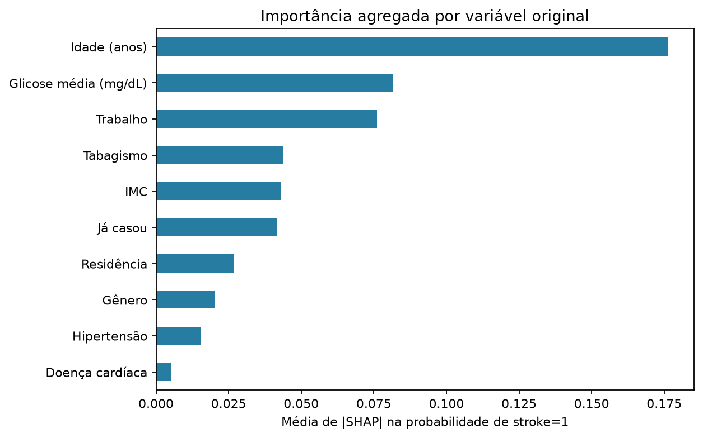
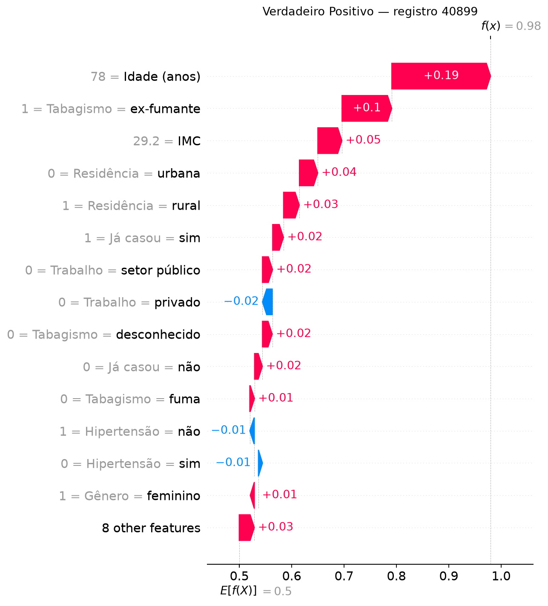
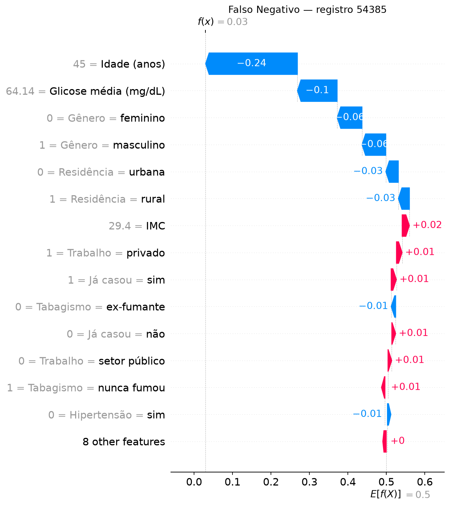

Projeto acadêmico · execução de 30/10/2026
O que orienta a previsão de AVC deste modelo?
Treinamos um Random Forest com dados clínicos e usamos SHAP para decompor suas previsões. Os resultados abaixo vêm de um teste separado antes do balanceamento.
Explorar as explicações
Coorte adulta
4.194
registros com idade acima de 18 anos
Teste original
839 pessoas
49 com
stroke=1
01 / Baseline
Desempenho no teste sem reamostragem
Precisão, recall e F1 referem-se à classe positiva. AUC-ROC usa a saída de probabilidade do modelo.
Divisão estratificada 80/20 → imputação de IMC no treino → SMOTENC no treino → codificação → Random Forest com 200 árvores. O artigo relatou métricas superiores, mas usou outra amostra e validação cruzada no conjunto já balanceado. Ver a comparação completa.
02 / Explicação global
Idade domina as contribuições
As barras somam as categorias de cada variável por pessoa e calculam a média de |SHAP|. O beeswarm abaixo mostra a direção do efeito das entradas codificadas em 200 pessoas reais do teste.

03 / Explicações locais
Dois resultados, duas trajetórias
Os waterfalls decompõem a saída do mesmo RF para dois registros reais do teste. O valor-base é próximo de 0,5 por causa do treino balanceado.
Verdadeiro positivo0,98
Registro 40899 · idade de 78 anos. O modelo previu stroke=1 e o rótulo real é 1.


Falso negativo0,03
Registro 54385 · idade de 45 anos. O modelo previu stroke=0, mas o rótulo real é 1.


04 / Interpretação responsável
O SHAP explica a previsão. Ele não valida o uso clínico.
O dataset registra AVC prévio, sem acompanhamento temporal demonstrado. As probabilidades do RF não foram calibradas para a prevalência real; 0,98 não significa 98% de risco futuro.
Idade aparece em linha com fatores de risco descritos pelo CDC. Hipertensão e doença cardíaca tiveram pouco impacto neste modelo, apesar de sua relevância clínica. Tipo de trabalho pode refletir fatores sociais e não deve ser interpretado como causa.